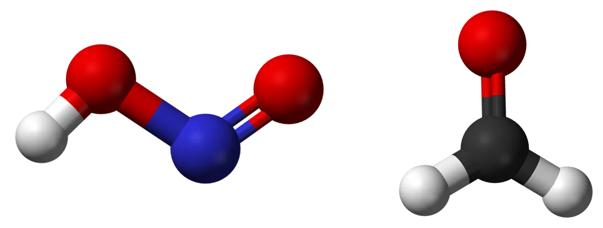

11/7/2023
-
Dr. Lyu is awarded a consultancy project with a total funding of HK$1,200,000 by Hong Kong Environmental Protection Department. This project entitled 'Feedback Mechanism of Secondary Reactive Gases Generated in Photochemical Smog to Ozone Formation and Regional Photochemistry' aims to i) characterize the temporal evolutions of HONO and HCHO in O3 pollution periods in urban HK; ii) determine the dynamic fractions of secondary HONO and HCHO utilizing a combination of observational and modelling approaches; iii) unravel the feedbacks of secondary reactive gases to O3 formation and regional photochemistry; and iv) explore innovative strategies of O3 pollution control from the perspective of mediating the feedback effect.
